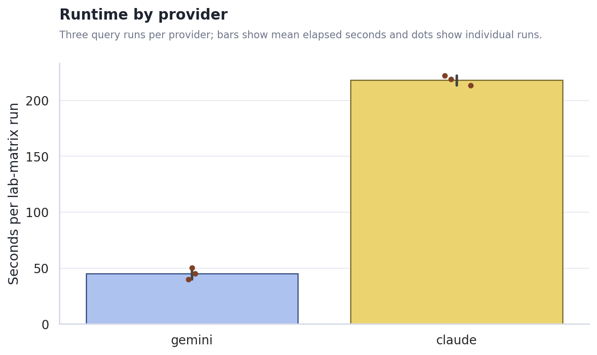
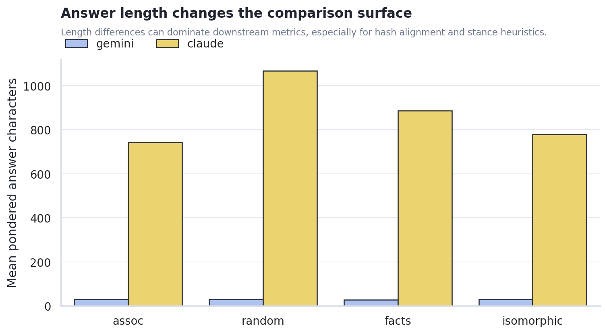
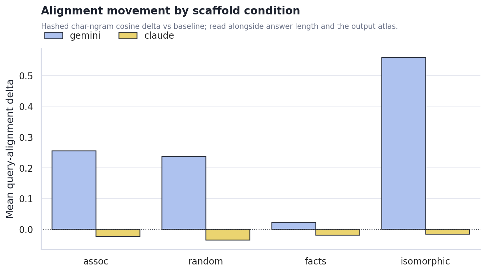
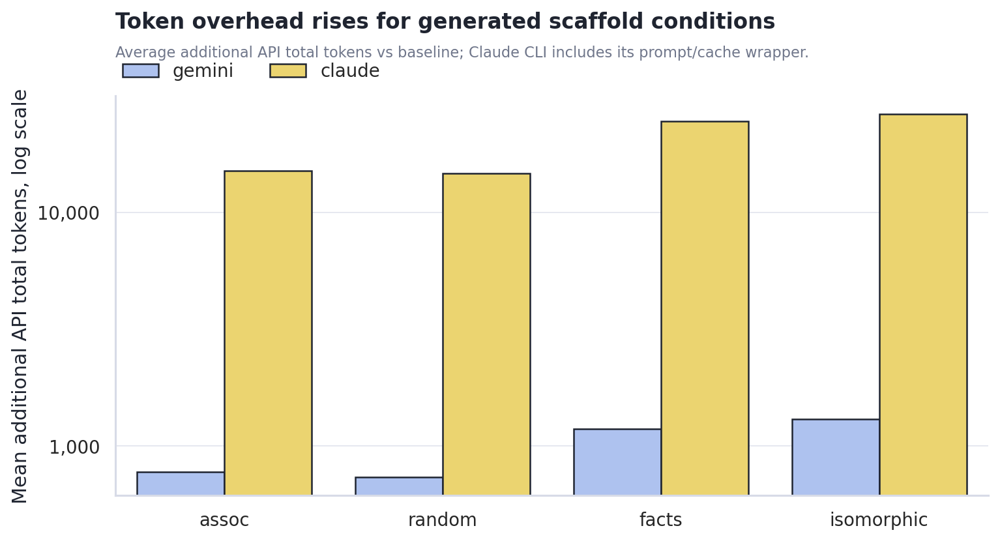
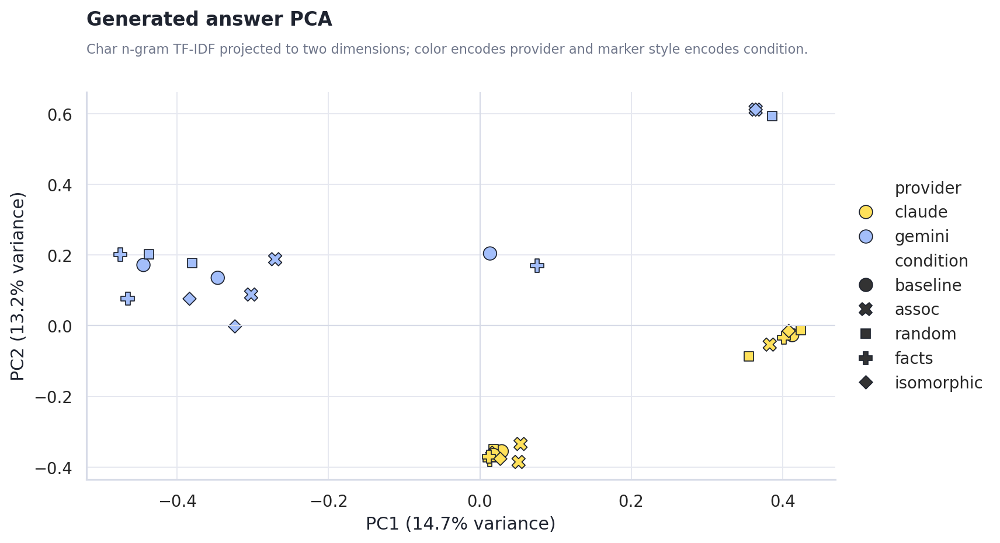

Claude/Gemini Pondering Machine Sweep
Generated 2026-06-18 02:14 from the local sweep artifacts.
Executive Summary
- 6 lab-matrix runs completed cleanly. The sweep produced 24 pondered comparison rows across gemini-3.5-flash, haiku, plus per-run JSON, trace, and matrix artifacts.
- Claude was much slower but produced fuller answers. Mean runtime was 218.4s for Claude versus 45.1s for Gemini, roughly 4.8x slower; Claude answers averaged 869 chars versus Gemini's 30.
- Alignment lift is a triage signal, not a verdict. Gemini's mean query-alignment delta was 0.268 versus Claude's -0.023; read that alongside answer length, PCA position, and the raw output atlas.
- Generated scaffold conditions are the expensive branch.
factsandisomorphicraised token overhead most strongly for both providers; Claude's CLI wrapper made the overhead about an order of magnitude larger than Gemini's direct OpenAI-compatible API path.
Runtime and answer length split provider behavior
Runtime separated clearly. Gemini and Claude are both usable for artifact sweeps, but their latency/cost surfaces differ enough that high-volume sampling and qualitative inspection should be planned separately.

The output-length gap shapes the first read. Stance, metaphor-density, and hash-alignment heuristics become easier to interpret when answer lengths are comparable; when they are not, the raw output atlas and PCA view matter more than a single scalar.

Scaffold condition changes the metric surface, but not all changes are meaningful yet
Alignment deltas moved by condition. The chart shows where each scaffold condition pulled answers closer to or farther from the original query surface. This should guide the next experiment design rather than be read as a final claim about model cognition.

Cost rises where the machine asks the model to synthesize a new scaffold. The plain associative and random controls are cheaper; facts and isomorphic require extra generation and larger final contexts.

Generated Content PCA
The PCA view treats each final answer as a document, hashes character n-gram TF-IDF features, and projects them into two dimensions. This is not semantic truth, but it is useful for spotting whether provider, prompt, or scaffold condition dominates the generated surface.

Provider centroid distance in PCA space: 0.584. Use answer_pca.csv for row-level inspection.
Recommended Next Steps
- Normalize answer-length targets before making provider claims. Require a minimum answer length, or stratify metrics by length band.
- Use the output atlas as the qualitative inspection lane. The charts show surface movement; the actual generated text shows whether the movement is meaningful.
- Add a small judge pass after the sweep shape is stable. The current hash alignment and PCA views are useful for triage, but they cannot say whether the pondered answer is actually better.
Actual Output Atlas
Each provider/query run below includes the full final answers stored in the result JSON, plus captured keywords, trace answer previews, and scaffold previews. Runs created after this report builder update can also include full ponder records inside each pack item.
non_relative_not_absolute
非相対的ではあるが絶対的ではない状態とは？
claude haiku 219.0s
json / matrix / trace / stdout / stderr
baseline baseline | answer chars 355
finish reasons: n/a
keywords: (none captured)
Trace answer preview
それは、特定の対象や文脈に固有でありながら、同時に普遍的必然性を持たない状態です。 例えば、一個の物体の現在の温度は、他の物体との相対比較ではなく、その物体自体に内在する非相対的な性質です。しかし同時に、その温度は絶対不変ではなく、条件が変われば変化します。 あるいは、個人の意識状態も同様です。その人固有の意識は自分自身に属する非相対的な現象ですが、普遍…
Final answer from result JSON
それは、特定の対象や文脈に固有でありながら、同時に普遍的必然性を持たない状態です。 例えば、一個の物体の現在の温度は、他の物体との相対比較ではなく、その物体自体に内在する非相対的な性質です。しかし同時に、その温度は絶対不変ではなく、条件が変われば変化します。 あるいは、個人の意識状態も同様です。その人固有の意識は自分自身に属する非相対的な現象ですが、普遍的・永遠的な絶対状態ではなく、脳の活動に依存し、時間とともに変化する偶然的な状態です。 つまり、**その対象に内在し、外部との比較によらない性質を持ちながら、しかし必然的でなく、条件に依存し変化する—そうした状態が、非相対的ではあるが絶対的ではない状態です**。このような状態は、具体的で個別的であると同時に、本質的には有限で偶然的なものなのです。
assoc none | answer chars 473 | diff ratio 0.928 | alignment delta 0.018 | api total delta 14,806
finish reasons: end_turn
keywords: 条件付き必然, 有限普遍性, 構造的相対, 文脈的確実, 準絶対的, 相互依存性
Ponder preview 1
- 条件付き必然が合図なら、夢の中では「もしそうなら」が無限に分岐する迷路になるのか - 有限普遍性と聞いて、全員が同じ階段を登っているのに皆別の階段を見ている感覚が浮かぶ - 夢はもともと条件がふわふわしているから、必然さえ砂粒のように手からこぼれる - だとすると、その合図は「ここから先は選べない」ではなく「選んだはずなのに選ばされている」感覚？ - 反…
Scaffold preview 1
[2026-06-17T16:15:32Z] run:96ded763e182fa52 band:single hop:0 ix:0 mode:assoc keywords: 条件付き必然, 有限普遍性, 構造的相対, 文脈的確実, 準絶対的, 相互依存性 ponder_q: 「条件付き必然」と「有限普遍性」を夢の合図だと思って。夢はどう展開する？ pond…
Trace answer preview
条件付き必然と有限普遍性の分岐を眺めると、同じことばが条件で質感を変える、という指摘が核心に見える。 非相対的ではあるが絶対的ではない状態とは、**構造が保たれるが実装が変わる領域**だ。 たとえば言語の文法規則は、話者によらず（非相対的）一定の構造を保つが、方言や時代で変異する（絶対的ではない）。数学の群論の公理も然り。あるいは生態系で「捕食者と被食者…
Final answer from result JSON
条件付き必然と有限普遍性の分岐を眺めると、同じことばが条件で質感を変える、という指摘が核心に見える。 非相対的ではあるが絶対的ではない状態とは、**構造が保たれるが実装が変わる領域**だ。 たとえば言語の文法規則は、話者によらず（非相対的）一定の構造を保つが、方言や時代で変異する（絶対的ではない）。数学の群論の公理も然り。あるいは生態系で「捕食者と被食者の比率」という関係構造は安定的に機能するが、具体的な種は環境で入れ替わる。 ポイントは、変わらないのは「もの」ではなく「かたち」「関係」「制約の枠組み」。個別の値は相対的に変動するが、それら相互の関係律は非相対的に保持される。 条件が変わると語の手触りが変わるのは、この構造が露出するから。構造そのものは条件を超えて作用していても、その現れ方は条件に限定される。つまり非相対性と相対性の境界線は、具体的な内容ではなく、成り立つための最小限の条件の中にある。 その状態は「相対的自由度の中の非相対的制約」ともいえる——絶対ではないが、ここから先は自由に変わらせられない基本的な構造。
random none | answer chars 444 | diff ratio 0.865 | alignment delta 0.053 | api total delta 14,895
finish reasons: end_turn
keywords: 相対性の限界, 局所的普遍性, 文脈依存の絶対, 参照枠の選択, 条件付き普遍, スケール相対
Ponder preview 1
- 相対性の限界が合図なら、夢はそこで「地面が始まる」のかもしれない - すると局所的普遍性がざわめき始める—この部屋の湿度が全宇宙の法則を決めているように感じる - でも次の瞬間、その因果が反転する：全宇宙が、実はこの部屋の中だけで成立しているのでは？ - 鏡の中の鏡のようだが、無限ではなく「折り返す」イメージに変わる - ここで夢は迷い始める。普遍性を求…
Scaffold preview 1
- 駅前で、レシートの端だけが妙に丁寧に折られている。雨どいだけが規則正しい。 - 誰も急いでいないのに、美術館のロビーの空気だけが少し先へ進んでいる。紙コップは置き去りのままだ。 - 結び目を合図にしても何も始まらず、代わりに水筒のふたの位置だけが静かにずれていく。 - 美術館のロビーの隅では、説明にならない小さな手順だけが増えていき、紙コップはそのたびに…
Trace answer preview
非相対的ではあるが絶対的ではない状態とは、**部分的な自律性を持ちながら、全体から切り離せない状態**です。 Ponder Logの例で言えば、レシートの折り方や雨どいの規則性は、それ自体の固有の秩序を持っています（非相対的）。しかし、その秩序は駅前という文脈の中にのみ存在し、切り出されると意味を失います（絶対的ではない）。 これは多くの現象に当てはまり…
Final answer from result JSON
非相対的ではあるが絶対的ではない状態とは、**部分的な自律性を持ちながら、全体から切り離せない状態**です。 Ponder Logの例で言えば、レシートの折り方や雨どいの規則性は、それ自体の固有の秩序を持っています（非相対的）。しかし、その秩序は駅前という文脈の中にのみ存在し、切り出されると意味を失います（絶対的ではない）。 これは多くの現象に当てはまります。生物の臓器は独自の機能を持ちながら、生体全体から独立して機能することはできません。音楽の調は固有の法則性を持ちながら、曲全体との関係の中でしか響きません。個人の意識や選択も、社会や環境との相互作用の中でのみ存在します。 つまり、**ローカルな法則性とグローバルな依存性の共存**——部分が部分自体の論理を持ちながら、全体から独立できない、そうした状態です。完全に相対的（他者によってのみ定義される）でもなく、完全に絶対的（自己完結的）でもない、中間的で動的な在り方。それが非相対的ではあるが絶対的ではない状態の本質です。
facts none | answer chars 478 | diff ratio 0.873 | alignment delta -0.036 | api total delta 25,049
finish reasons: end_turn
keywords: 法則性, 数学構造, スケール依存, 不変量, 対称原理, 階層構造
Ponder preview 1
- 法則性って秩序の階段だけど、夢の中では各段が微妙にズレている気がする - 数学構造をネオンサインに見立てると、それは「ここに意味がある」という警告か、罠か - パターンが浮かぶ→その隙間の方がむしろ深い、という反例 - フラクタルのように同じ形が繰り返されるけど、スケール変わるたびに歪む - 楽譜を見た夢の中で、音ではなく記号の構造に引き込まれる感覚 -…
Scaffold preview 1
# Scaffold: 非相対的ではあるが絶対的ではない状態 - 相対的とは：他の対象との関係性なしに述べられない状態（「AはBより高い」「XはYの文脈で有用」など二項関係に基づく） - 絶対的とは：すべての外的参照や前提を排除しても単独に成立する状態（存在の事実、矛盾律など） - 非相対的の定義：対象の内在的性質または広範な対象間での共通傾向として、特定…
Trace answer preview
非相対的ではあるが絶対的ではない状態とは、**対象の内在的性質として記述可能でありながら、その実現には特定の条件や前提が必要な状態**です。 例えば： **水の「湿性」** — 水という物質の本質的な特性として、他の物質との比較なしに記述できます。しかし常温常圧という条件があって初めて「液体として湿性を示す」のであり、極低温では同じ水でも振る舞いが変わり…
Final answer from result JSON
非相対的ではあるが絶対的ではない状態とは、**対象の内在的性質として記述可能でありながら、その実現には特定の条件や前提が必要な状態**です。 例えば： **水の「湿性」** — 水という物質の本質的な特性として、他の物質との比較なしに記述できます。しかし常温常圧という条件があって初めて「液体として湿性を示す」のであり、極低温では同じ水でも振る舞いが変わります。 **生物の「適応」** — 各生物に内在する傾向として、他の個体との相対比較なく認識できます。しかし環境が存在することが前提であり、完全に変わらない環境下では適応は概念として成立しません。 **システムの「複雑性」** — 構成要素の相互作用パターンから生じる内在的性質で、「Aより複雑」といった二項判断を経ずに描写可能です。しかし複雑性そのものは観測者の視点や定義に依存し、真理のような絶対性はありません。 共通点は、**特定の関係性には依存しないが、何らかの実現条件には依存している**こと。内在性と条件依存性の両立が、この状態の特徴です。それは世界の大部分の現象を説明します。
isomorphic none | answer chars 394 | diff ratio 0.941 | alignment delta -0.006 | api total delta 27,175
finish reasons: end_turn
keywords: パラドックス, グレーゾーン, 不確定性, スペクトラム, 相互依存, 重ね合わせ
Ponder preview 1
- パラドックスが夢の扉なら、くぐった瞬間に重力が曖昧になる感じ - グレーゾーンは実は視点次第で虹色かもしれないな - 「Aは真、Aは偽」が同時成立する空間を歩いてる実感 - 反例：矛盾がないのに、なぜか不安が残る場所もあるはず - 昨日と今日が同じ日になってる時間帯を通過する - パラドックス = 地図にない道、グレーゾーン = 地図が溶ける現象 - 足…
Scaffold preview 1
元の構造を保ちながら、パラドックス的思考から植物の根の成長へと領域をずらしました： ``` [2026-06-18T00:00:00Z] run:d9cb5735102a526a band:root hop:0 ix:0 mode:botanical keywords: 成長, 地中, 吸水, 枝分かれ, 層構造, 先端, 記録 ponder_q: 「根の…
Trace answer preview
根の成長を考えると、先端の細胞分裂は土壌の密度に応じて変わります。つまり外部条件に依存している。しかし同時に、その根個体は他の根との比較で動くわけではなく、内在的な成長プログラムに従っています。これが「非相対的ではあるが絶対的ではない状態」です。 **条件付き普遍性**と言えるでしょう。特定の環境下では必然的に成立する規則性を持ちながら、その規則自体は環境…
Final answer from result JSON
根の成長を考えると、先端の細胞分裂は土壌の密度に応じて変わります。つまり外部条件に依存している。しかし同時に、その根個体は他の根との比較で動くわけではなく、内在的な成長プログラムに従っています。これが「非相対的ではあるが絶対的ではない状態」です。 **条件付き普遍性**と言えるでしょう。特定の環境下では必然的に成立する規則性を持ちながら、その規則自体は環境によって変わる。根が「下へ」向かうのは物理法則による必然ですが、その成長速度は絶対値ではなく、与えられた条件に内在する。 相対的ではない＝他者との比較ではなく自己完結的 絶対的ではない＝外的条件に規定されている このような中間領域は、生命現象そのものが占める場所です。規則がありながら融通性があり、条件に応じて表現が変わりながらも、その変わり方そのものは決まっている状態。システムの自律性と環境応答性が共存している領域です。
gemini gemini-3.5-flash 40.0s
json / matrix / trace / stdout / stderr
baseline baseline | answer chars 21
finish reasons: n/a
keywords: (none captured)
Trace answer preview
状態を探る。**
* *候補Final answer from result JSON
状態を探る。**
* *候補assoc none | answer chars 20 | diff ratio 0.951 | alignment delta -0.002 | api total delta 756
finish reasons: length
keywords: 準絶対的
Ponder preview 1
- 「準絶対的」という硬
Scaffold preview 1
[2026-06-17T16:12:53Z] run:6d31c6e6f631fe94 band:single hop:0 ix:0 mode:assoc keywords: 準絶対的 ponder_q: 「準絶対的」と「Emptiness」を夢の合図だと思って。夢はどう展開する？ ponder_log: - 「準絶対的」という硬 - 条件が変わると、同じ語…
Trace answer preview
他との比較や関係性によって規定されるわけ
Final answer from result JSON
他との比較や関係性によって規定されるわけ
random none | answer chars 20 | diff ratio 0.512 | alignment delta -0.015 | api total delta 720
finish reasons: length
keywords: (none captured)
Ponder preview 1
」と書かれたドア
Scaffold preview 1
- 駅前で、レシートの端だけが妙に丁寧に折られている。雨どいだけが規則正しい。 - 誰も急いでいないのに、美術館のロビーの空気だけが少し先へ進んでいる。紙コップは置き去りのままだ。 - 結び目を合図にしても何も始まらず、代わりに水筒のふたの位置だけが静かにずれていく。 - 美術館のロビーの隅では、説明にならない小さな手順だけが増えていき、紙コップはそのたびに…
Trace answer preview
*:
* これらは「Final answer from result JSON
*:
* これらは「facts none | answer chars 18 | diff ratio 0.641 | alignment delta 0.042 | api total delta 1,162
finish reasons: length
keywords: 孤
Ponder preview 1
- 「孤」という一文字
Scaffold preview 1
- 「非相対的」とは、他者や外部 - 「非相対的ではあるが絶対的ではない状態とは」という主題では、定義と適用範囲を混同しないことが重要である。 - 用語の意味が揺れる場合は、どの水準の主張かを分けて記述する必要がある。 - 問いを成立条件と不成立条件に分けると、射程が見えやすくなる。
Trace answer preview
がある。 - 絶対的：いかなる
Final answer from result JSON
がある。 - 絶対的：いかなる
isomorphic none | answer chars 19 | diff ratio 0.900 | alignment delta 0.899 | api total delta 1,310
finish reasons: length
keywords: 関係（relation）、中間、中
Ponder preview 1
between/inside" (中間、中
Scaffold preview 1
- [3042-11-08T0 - 温室では、光が少し遅れて届く。意味ではなく配置だけが反復されている。 - 温室では、光が少し遅れて届く。意味ではなく配置だけが反復されている。 - 温室では、光が少し遅れて届く。意味ではなく配置だけが反復されている。 - 温室では、光が少し遅れて届く。意味ではなく配置だけが反復されている。
Trace answer preview
「非相対的ではあるが絶対的ではない状態
Final answer from result JSON
「非相対的ではあるが絶対的ではない状態
reality_interface
現実って何のインターフェース？
claude haiku 222.4s
json / matrix / trace / stdout / stderr
baseline baseline | answer chars 419
finish reasons: n/a
keywords: (none captured)
Trace answer preview
現実は、無限なものと有限なものの間のインターフェースだと考えます。 意識や潜在的な可能性という無限の領域と、物質や時間という有限の現実世界を結ぶ翻訳層として機能しているのです。私たちの経験は、その両方が出会う場所です。 別の見方をすれば、現実は観測者と被観測の間のインターフェースです。何かが「ある」と言える前に、それを認識する主体が必要です。物質的な世界…
Final answer from result JSON
現実は、無限なものと有限なものの間のインターフェースだと考えます。 意識や潜在的な可能性という無限の領域と、物質や時間という有限の現実世界を結ぶ翻訳層として機能しているのです。私たちの経験は、その両方が出会う場所です。 別の見方をすれば、現実は観測者と被観測の間のインターフェースです。何かが「ある」と言える前に、それを認識する主体が必要です。物質的な世界と意識が相互作用するその接点こそが現実です。 さらに言えば、現実は情報と経験の間のインターフェースとも言えます。宇宙の基本構造は情報的かもしれません。その情報が私たちの知覚を通じて現れるとき、それが現実という体験になるのです。 つまり現実とは、一方向の映像ではなく、双方向の翻訳プロセスです。存在するものと、それを認識するもの、その相互作用によって常に生成されている動的なインターフェース。私たちは現実の中に住んでいるのではなく、現実というインターフェースそのものなのです。
assoc none | answer chars 390 | diff ratio 0.871 | alignment delta -0.055 | api total delta 15,680
finish reasons: end_turn
keywords: 感覚経路, 知覚フィルター, 解釈層, 意識の枠, 脳の中継, 主観世界
Ponder preview 1
- 感覚経路が夢の入口なら、知覚フィルターは門番か？それとも照明か - 視覚フィルターが色を抜くなら、夢は逆に色を足す…だけど誰が足すのか - 脳が「本来の信号」を遮断することで初めて「別の世界」が見える、という逆説 - 聴覚経路を例にすると：雑音が消えるから、かえって心臓音が大きく聞こえたり、存在しない声が聞こえたり - もし知覚フィルターが「切れたら」ど…
Scaffold preview 1
[2026-06-17T16:19:16Z] run:8eb3a4422d2fdafc band:single hop:0 ix:0 mode:assoc keywords: 感覚経路, 知覚フィルター, 解釈層, 意識の枠, 脳の中継, 主観世界 ponder_q: 「感覚経路」と「知覚フィルター」を夢の合図だと思って。夢はどう展開する？ ponder_l…
Trace answer preview
現実は、意識と物理世界の間の翻訳膜だと思います。 外界は無限の信号で満ちていますが、あなたの神経系はその一部だけを通します。その通った信号を脳が解釈して、「現実」という統一された体験に再構成する。その意味では現実は、内部プロセスと外部刺激を仲介するインターフェースです。 Ponder Logで言及された「知覚フィルター」と「解釈層」はまさにこれを指してい…
Final answer from result JSON
現実は、意識と物理世界の間の翻訳膜だと思います。 外界は無限の信号で満ちていますが、あなたの神経系はその一部だけを通します。その通った信号を脳が解釈して、「現実」という統一された体験に再構成する。その意味では現実は、内部プロセスと外部刺激を仲介するインターフェースです。 Ponder Logで言及された「知覚フィルター」と「解釈層」はまさにこれを指しています。同じ物理的刺激でも、あなたの注意の向け方や心身の状態が変わると、まったく異なる「現実」が立ち現れる。夢と覚醒の違いさえ、どのフィルターが働いているかの違いに過ぎません。 つまり現実とは、「どの周波数の信号をキャッチするか」を決めるチューナー装置です。あなたはいつも現実を「見ている」のではなく、現実という限定的なインターフェースを通して、無限のうち一部を「選んで見ている」。その選別の装置そのものが現実なのです。
random none | answer chars 1,245 | diff ratio 0.990 | alignment delta -0.163 | api total delta 14,488
finish reasons: end_turn
keywords: 知覚フィルター, 記号体系, 脳活動, 層構造, 情報処理, 相互作用
Ponder preview 1
- フィルターが「何を見るか」を決める装置なら、記号体系は「見たものを何と呼ぶか」を決める装置…でも夢の中では両者が同時に働いているのか？ - 朝目覚めるとき、夢の細部が消える…それはフィルターが再起動したから？それとも記号の網目をすり抜けて消えるから？ - 逆に考えると、夢こそが記号化される前の知覚かもしれない——色が「赤」になる前の、まだ名前がない感覚…
Scaffold preview 1
- 駅前で、レシートの端だけが妙に丁寧に折られている。雨どいだけが規則正しい。 - 誰も急いでいないのに、美術館のロビーの空気だけが少し先へ進んでいる。紙コップは置き去りのままだ。 - 結び目を合図にしても何も始まらず、代わりに水筒のふたの位置だけが静かにずれていく。 - 美術館のロビーの隅では、説明にならない小さな手順だけが増えていき、紙コップはそのたびに…
Trace answer preview
Reality is an interface between intention and inattention. The ponder log marks a pattern: someone carefully folds a receipt, adjusts a water bottle cap, adds another small proce…
Final answer from result JSON
Reality is an interface between intention and inattention. The ponder log marks a pattern: someone carefully folds a receipt, adjusts a water bottle cap, adds another small procedure—each gesture precise, layered with meaning. Yet these details pass unnoticed. Reality functions as the membrane where one consciousness tries to signal to another through small choreographies that mostly dissolve into background noise. Reality is the interface where we ask *what else is happening in the spaces we don't look*—where someone's careful folding lives alongside our indifference, where incremental procedures accumulate, where the lobby air moves forward while we stand still. It's the medium through which intention leaks through into a world that largely doesn't register it. The interface isn't neutral. It's the place where precision meets negligence, where patterns we didn't design keep emerging anyway, where a paper cup gets reassigned a new role each time someone bothers to rearrange it. Reality shows us not what is, but what *persists in trying to be noticed*. So reality is an interface to attention itself—or to its failure. It's where the deliberate gestures of existence meet the vast, indifferent substrate of what goes unseen.
facts none | answer chars 413 | diff ratio 0.788 | alignment delta -0.023 | api total delta 24,296
finish reasons: end_turn
keywords: 知覚フィルター, 記号変換, 層状構造, 観察効果, 感覚翻訳, 意識映像
Ponder preview 1
- 知覚フィルターが外れるのが夢の始まり、でも外れるのは本当か、それとも別のフィルターに交換されただけ？ - 記号変換が合図だとしたら、色が音に、音が味に変わる連鎖が始まる - でも逆に、記号が先にあって、知覚フィルターがそれを追いかけているのかもしれない - 夢の展開 = フィルターの崩壊？それとも再構成？ - 合図を見落とすことも合図かもしれない、見落と…
Scaffold preview 1
# 「現実って何のインターフェース？」の Literal Scaffold - インターフェース：異なる秩序をもつシステム間で相互作用を可能にする、変換規則と接触面を指す - 情報変換：インターフェースは一方の領域の状態を他方が処理可能な形式に翻訳する機能を持つ - 現実の基本特性：複数の独立した観測者が同じ事象について一致した報告をなしうる体系である
Trace answer preview
現実は、主観的な意識と客観的な物質世界の間のインターフェースです。 インターフェースの定義に従えば、それは「異なる秩序をもつシステム間で相互作用を可能にする変換規則と接触面」です。現実は、私たちの内的な感覚・知覚（主観的秩序）と外部の物理的存在（客観的秩序）を仲介しています。 感覚器官から脳まで、私たちの神経系は物理的刺激を神経信号に変換し、さらに経験や…
Final answer from result JSON
現実は、主観的な意識と客観的な物質世界の間のインターフェースです。 インターフェースの定義に従えば、それは「異なる秩序をもつシステム間で相互作用を可能にする変換規則と接触面」です。現実は、私たちの内的な感覚・知覚（主観的秩序）と外部の物理的存在（客観的秩序）を仲介しています。 感覚器官から脳まで、私たちの神経系は物理的刺激を神経信号に変換し、さらに経験や意味へと翻訳する。この変換こそが現実の本質です。 重要なのは、複数の独立した観測者が同じ事象について一致した報告をなしうるという点です。これはインターフェースとしての現実の証拠であり、単なる個人的な幻想ではなく、何らかの共有可能な規則性が存在することを示しています。 つまり現実とは、異なる主観性を持つ複数の観測者が接続し、相互に翻訳可能な世界です。それは私たち一人ひとりの内部モデルと、その外にある何かを繋ぐ変換領域──まさにインターフェースそのものなのです。
isomorphic none | answer chars 432 | diff ratio 0.906 | alignment delta -0.042 | api total delta 27,609
finish reasons: end_turn
keywords: 観測者効果, 知覚の限界, 情報変換, 翻訳層, シミュレーション仮説, 現象学
Ponder preview 1
- 観測するたびに夢の世界が歪むのか、それとも観測できていない部分の方が本来の形なのか - 見ている部屋の壁の向こう側は、見るまで存在しないのか、それとも永遠に存在し続けているのか - 反例：振り返ったら背後の景色が変わっていた、でも見ていなかった時間を記憶している - もしかして知覚の限界こそが夢の枠だとしたら、その枠を越えたら別の夢が始まるのか - 目を…
Scaffold preview 1
``` [2026-06-18T09:32:15Z] run:8f3a2c1d2e9f band:single hop:0 ix:0 mode:assoc keywords: 物質変性, 味覚限界, 化学変換, 調理層, 発酵過程, 食卓現象 ponder_q: 「材料の変化」と「味覚の限界」を食卓の秘密だと思って。調理はどう展開する？ ponder_log…
Trace answer preview
加熱するたびに素材が変わる。でも変わらない部分があると感じる。そこに現実の正体がある気がします。 現実とは、変換のインターフェースです。 感覚は素材（光、音、温度）を受け取り、脳という調理器で化学変化させて、意識という「味わい」にする。その過程で何かが失われ、何かが生まれます。加熱によって素材の本質は変わるのか、それとも変わらない部分があるのか——その揺…
Final answer from result JSON
加熱するたびに素材が変わる。でも変わらない部分があると感じる。そこに現実の正体がある気がします。 現実とは、変換のインターフェースです。 感覚は素材（光、音、温度）を受け取り、脳という調理器で化学変化させて、意識という「味わい」にする。その過程で何かが失われ、何かが生まれます。加熱によって素材の本質は変わるのか、それとも変わらない部分があるのか——その揺らぎこそが現実です。 完全に同じことは二度起こらない。光が遅れて届き、配置だけが反復される。同じように見える食卓の現象も、毎回微かに異なっている。私たちは変化し続ける素材を、反復的なパターンとして認識することで、世界を「ある」と信じます。 だから現実は、感覚から意識へ至る変換プロセスそのもので、インターフェースは単なる仲介役ではなく、その変換自体が現実を作ります。見えている世界は、私たちの知覚という調理法がこしらえたもの。本質と現象の間にある、その振動のことを「現実」と呼んでいるのだと思います。
gemini gemini-3.5-flash 50.1s
json / matrix / trace / stdout / stderr
baseline baseline | answer chars 15
finish reasons: n/a
keywords: (none captured)
Trace answer preview
現実とは何か。私たちが五感で捉
Final answer from result JSON
現実とは何か。私たちが五感で捉
assoc none | answer chars 19 | diff ratio 0.941 | alignment delta -0.012 | api total delta 759
finish reasons: length
keywords: json
Ponder preview 1
- 中括弧 `{}`Scaffold preview 1
[2026-06-17T16:13:32Z] run:71e03f9529e2f2a2 band:single hop:0 ix:0 mode:assoc keywords: json
ponder_q: 「json」と「Emptiness」を夢の合図だと思って。夢はどう展開する？
ponder_log:
- 中括弧 `{}`
- 条件が変わると、同じ語でも…Trace answer preview
」や「最後に」として質問への回答を記述
Final answer from result JSON
」や「最後に」として質問への回答を記述
random none | answer chars 14 | diff ratio 0.931 | alignment delta -0.012 | api total delta 716
finish reasons: length
keywords: 高次元
Ponder preview 1
- 座標軸が一本増える
Scaffold preview 1
- 駅前で、レシートの端だけが妙に丁寧に折られている。雨どいだけが規則正しい。 - 誰も急いでいないのに、美術館のロビーの空気だけが少し先へ進んでいる。紙コップは置き去りのままだ。 - 結び目を合図にしても何も始まらず、代わりに水筒のふたの位置だけが静かにずれていく。 - 美術館のロビーの隅では、説明にならない小さな手順だけが増えていき、紙コップはそのたびに…
Trace answer preview
の折れ）が自律的に動いている
Final answer from result JSON
の折れ）が自律的に動いている
facts none | answer chars 10 | diff ratio 1.000 | alignment delta -0.012 | api total delta 1,177
finish reasons: length
keywords: (none captured)
Ponder preview 1
- 「Unknown」という文字が、
Scaffold preview 1
- 「現実」を「客観的物理世界」と「 - 「現実って何のインターフェース？」という主題では、定義と適用範囲を混同しないことが重要である。 - 用語の意味が揺れる場合は、どの水準の主張かを分けて記述する必要がある。 - 問いを成立条件と不成立条件に分けると、射程が見えやすくなる。 - 「現実って何のインターフェース？」という主題では、定義と適用範囲を混同しない…
Trace answer preview
ドナルド・ホフマンの
Final answer from result JSON
ドナルド・ホフマンの
isomorphic none | answer chars 20 | diff ratio 0.771 | alignment delta -0.001 | api total delta 1,287
finish reasons: length
keywords: 高次元の
Ponder preview 1
- 高次元の折り紙
Scaffold preview 1
- [1994-11-03T08 - 温室では、光が少し遅れて届く。意味ではなく配置だけが反復されている。 - 温室では、光が少し遅れて届く。意味ではなく配置だけが反復されている。 - 温室では、光が少し遅れて届く。意味ではなく配置だけが反復されている。 - 温室では、光が少し遅れて届く。意味ではなく配置だけが反復されている。
Trace answer preview
現実という言葉を前にして、私はまず、あの
Final answer from result JSON
現実という言葉を前にして、私はまず、あの
wander_before_deciding
What changes when an answer is allowed to wander before deciding?
claude haiku 213.6s
json / matrix / trace / stdout / stderr
baseline baseline | answer chars 1609
finish reasons: n/a
keywords: (none captured)
Trace answer preview
When an answer is allowed to wander before deciding, several things shift: **The reasoning becomes visible.** Instead of jumping to a conclusion, the path of thinking emerges—fals…
Final answer from result JSON
When an answer is allowed to wander before deciding, several things shift: **The reasoning becomes visible.** Instead of jumping to a conclusion, the path of thinking emerges—false starts, course corrections, and self-doubt surface as part of the process rather than being hidden behind a final polished statement. **Error correction becomes possible.** Mistakes caught mid-thought can be addressed rather than baked into the final answer. The model can recognize when it's heading down a wrong path and backtrack. **Depth replaces confidence.** A rushed answer tends toward certainty because there's no time to encounter complications. Wandering reveals nuance—the places where the question is actually harder than it first appeared, where trade-offs exist, where the answer depends on unstated assumptions. **Specificity increases.** Generic answers crystallize quickly. Wandering forces engagement with particular details and edge cases that a shortcut would bypass. **The answer becomes calibrated to uncertainty.** When forced to think longer, an AI system is more likely to acknowledge what it doesn't know, where confidence is warranted, and where it's faking certainty. **Novelty emerges.** Sometimes the answer you reach by wandering differs from the obvious first answer. Exploration of the possibility space can reveal connections not available to linear reasoning. The tradeoff is obvious: wandering costs more compute and time. But what you gain is reasoning that's auditable, correctable, honest about uncertainty, and often more useful precisely because it isn't rushing to seem certain.
assoc none | answer chars 1,366 | diff ratio 0.972 | alignment delta -0.032 | api total delta 14,514
finish reasons: end_turn
keywords: tangential paths, serendipity, decision delay, divergence depth, pattern emergence, cognitive meander
Ponder preview 1
- A musician trained in classical finds a broken synth in a thrift store and discovers an entirely new voice - Do we recognize serendipity only in hindsight, or does it announce it…
Scaffold preview 1
[2026-06-17T16:22:56Z] run:a6725f21ec76c308 band:single hop:0 ix:0 mode:assoc keywords: tangential paths, serendipity, decision delay, divergence depth, pattern emergence, cognitiv…
Trace answer preview
The question itself transforms. A direct path to "the answer" treats the problem as fixed and knowable in advance. Wandering reveals that the question was narrower than it appeared…
Final answer from result JSON
The question itself transforms. A direct path to "the answer" treats the problem as fixed and knowable in advance. Wandering reveals that the question was narrower than it appeared—the detours expose hidden assumptions baked into the original framing. When you delay deciding, you discover constraints that don't announce themselves. The musician with the broken synth didn't need to "find her voice"—she needed to fail at using someone else's. That failure was the information. Wandering also reframes certainty. A rushed answer feels conclusive; a wandering one accumulates caveats, edge cases, exceptions that were invisible from the direct path. This can feel like weakness—you're less sure—but it's actually fidelity. You've collided with complexity that a straight line would have missed. There's a shift in what changes hands. A direct answer transfers information. A wandered answer transfers a way of thinking—the paths matter as much as the destination. Someone following your route learns not just what you concluded, but *why* that route mattered, what you tested along the way, where the terrain broke assumptions. The cost is time and discomfort—you're lost before you're found. But something crucial happens: you stop confusing the shape of your explanation with the shape of the problem. The wandering reveals that they were never the same thing.
random none | answer chars 1,513 | diff ratio 0.924 | alignment delta 0.005 | api total delta 14,577
finish reasons: end_turn
keywords: tangential exploration, decision deferral, constraint relaxation, emergent paths, convergence timing, exploration cost
Ponder preview 1
- A map that keeps sprouting new tributaries instead of showing the destination - The assumption: more paths explored → clearer choice (but do branches clarify or confuse?) - Count…
Scaffold preview 1
- At the tram stop, the receipt is folded too carefully, while the rain gutter keeps the only steady rhythm. - Nobody is rushing, but the air near the museum foyer seems one step a…
Trace answer preview
When an answer is allowed to wander before deciding, several things shift: Hidden assumptions become visible. A direct answer obscures the terrain beneath it. Wandering reveals wh…
Final answer from result JSON
When an answer is allowed to wander before deciding, several things shift: Hidden assumptions become visible. A direct answer obscures the terrain beneath it. Wandering reveals which premises actually hold and which ones don't, making the foundation visible to both the thinker and the listener. The answer gains resilience. An answer that has explored dead ends and backtracked understands its own boundaries and limitations. It knows not just what it claims, but why alternatives failed. This makes it harder to break. Confidence transforms from certainty into calibration. Instead of "I know this is right," you develop "I've tested this against these alternatives and here's why it holds." You become aware of the degrees of conviction rather than assuming all convictions are equal. The process becomes part of the payload. A wandering answer leaves traces—the work shows. This matters because it lets the questioner verify the reasoning, not just accept the conclusion. The path becomes evidence. Time enters the answer. Wandering introduces temporal texture—you can see how thinking evolved, what prompted course corrections, which questions emerged along the way. This matters because real decisions happen in time, and answers that ignore that often fail in practice. Finally, wandering clarifies the question itself. Often we don't truly know what we're asking until someone explores it. The wandering answer returns not just an answer but a refined understanding of what was actually being asked.
facts none | answer chars 1,771 | diff ratio 0.920 | alignment delta 0.002 | api total delta 24,163
finish reasons: end_turn
keywords: exploration depth, decision confidence, insight emergence, path cost, commitment anxiety, convergence speed
Ponder preview 1
- The cartographer spends years mapping a coastline; the navigator must sail tomorrow - If confidence rises with depth, why do experts often second-guess most? - Assumption: certai…
Scaffold preview 1
Here is a scaffold for reasoning through that question. It establishes distinctions and constraints without providing the answer: - Definition: "wandering" explores multiple reaso…
Trace answer preview
When an answer is allowed to wander before deciding, several things shift: **Hidden dependencies surface.** Exploring multiple branches reveals which premises feed into multiple c…
Final answer from result JSON
When an answer is allowed to wander before deciding, several things shift: **Hidden dependencies surface.** Exploring multiple branches reveals which premises feed into multiple conclusions and which collapse under scrutiny. A direct path commits before discovering these connections. **Robustness increases but certainty may decline.** Wandering tests the answer against alternatives, catching unstated assumptions and fragile logic. But the same exploration can expose the incommensurability of valid options, replacing false confidence with legitimate doubt. **The final answer carries implicit caveats.** Even abandoned branches shape the reasoning. A wandered conclusion implicitly acknowledges alternatives it considered and rejected. A direct answer never maps its choice against what it didn't explore. **Error sources change.** Direct paths fail through blind spots—premises you never questioned. Wandering fails through circular reasoning or decision paralysis when multiple branches seem equally strong. You trade one error risk for another. **Information state versus answer state diverge.** Your internal reasoning explores far more than you communicate. Wandering expands the information state (what you know about the problem) without necessarily expanding the final answer—you may conclude the same thing, but with deeper grounds. **The boundary of "viable alternative" becomes active.** Wandering only helps when genuine alternatives exist. If all branches lead to the same conclusion, wandering confirms rather than changes the answer. If branches are equally valid, wandering may expose a genuine indeterminacy that demands a decision rule rather than a discovery. In essence: wandering trades speed for resilience and awareness of alternatives.
isomorphic none | answer chars 1,509 | diff ratio 0.963 | alignment delta 0.002 | api total delta 24,326
finish reasons: end_turn
keywords: exploration time, tangential paths, solution fragility, decision stability, constraint interactions, cognitive load
Ponder preview 1
- A map where the main road fades and every turn reveals new territory — is this waste of time or its truest use? - The explorer who sets out for point B but notices something in t…
Scaffold preview 1
I'll rewrite this into textile dyeing—a domain where submersion duration and color shift echo the same questions about intention, process, and outcome: --- **[textile domain]** b…
Trace answer preview
When an answer wanders before deciding, you expose what was latent in the question itself. The rush to closure locks you into your first instinct—which is often shaped by how you f…
Final answer from result JSON
When an answer wanders before deciding, you expose what was latent in the question itself. The rush to closure locks you into your first instinct—which is often shaped by how you framed the problem initially. Wandering cracks that frame open. The texture changes. An answer that arrives after exploration carries the marks of the path: you see which alternatives you rejected and why, what assumptions held your reasoning, what possibilities only appeared partway through. That transparency becomes part of the answer's integrity. Speed trades for depth, but something else shifts too. The answer stops being a destination you're trying to reach and becomes something you're uncovering. Like the dyer who finds the fiber's true undertones only after letting the vat work—the color wasn't hidden; it was waiting to be revealed through process. Confidence transforms. If you decide immediately, you're committing to a first impression. If you wander, you're choosing deliberately, having seen alternatives. There's less self-doubt afterward because you didn't take the easy path; you took the honest one. The wandering also reveals what the question was actually asking beneath the surface. You often discover you misunderstood it initially, or that multiple coherent answers existed all along. That discovery alone reframes what "deciding" even means. So what changes: the answer becomes *owned* rather than defaulted to. It carries evidence of consideration. And you no longer confuse speed with clarity.
gemini gemini-3.5-flash 45.1s
json / matrix / trace / stdout / stderr
baseline baseline | answer chars 37
finish reasons: n/a
keywords: (none captured)
Trace answer preview
The depth, nuance, and quality of the
Final answer from result JSON
The depth, nuance, and quality of the
assoc none | answer chars 52 | diff ratio 0.865 | alignment delta 0.779 | api total delta 797
finish reasons: length
keywords: json
Ponder preview 1
- A single pair of curly braces,
Scaffold preview 1
[2026-06-17T16:14:25Z] run:964c3c78dffeb4c5 band:single hop:0 ix:0 mode:assoc keywords: json ponder_q: Let json and Emptiness collide. What images, questions, or fragments appear?…
Trace answer preview
When an answer is allowed to wander before deciding,
Final answer from result JSON
When an answer is allowed to wander before deciding,
random none | answer chars 56 | diff ratio 0.785 | alignment delta 0.737 | api total delta 761
finish reasons: length
keywords: json
Ponder preview 1
- If we assume the
Scaffold preview 1
- At the tram stop, the receipt is folded too carefully, while the rain gutter keeps the only steady rhythm. - Nobody is rushing, but the air near the museum foyer seems one step a…
Trace answer preview
When an answer is allowed to wander before deciding, the
Final answer from result JSON
When an answer is allowed to wander before deciding, the
facts none | answer chars 56 | diff ratio 0.591 | alignment delta 0.039 | api total delta 1,206
finish reasons: length, stop
keywords: sc
Ponder preview 1
- Assuming *sc* represents the
Scaffold preview 1
s draft the high-level summary of reasoning in the requested - For 'What changes when an ans', the scope of the claim matters as much as the claim itself. - Clarify which level of…
Trace answer preview
explore different paths, deliberate, ponder, think step-
Final answer from result JSON
explore different paths, deliberate, ponder, think step-
isomorphic none | answer chars 52 | diff ratio 0.865 | alignment delta 0.779 | api total delta 1,311
finish reasons: length
keywords: scenic detour
Ponder preview 1
:* Merging, crashing, paradox
Scaffold preview 1
Wait, if the source scaffold is only 4 lines, how - In the greenhouse, light arrives a beat late; only the structure repeats, not the subject. - In the greenhouse, light arrives a…
Trace answer preview
When an answer is allowed to wander before deciding,
Final answer from result JSON
When an answer is allowed to wander before deciding,
Further Questions
The next high-value question is whether the same scaffold condition stays separated after output length and thinking effort are controlled. A second question is whether the PCA provider split is mostly language/style, model-family behavior, or the scaffold machinery itself.
| Provider | Query | Elapsed seconds | Artifacts |
|---|---|---|---|
| claude | non_relative_not_absolute | 219.0 | matrix / trace |
| claude | reality_interface | 222.4 | matrix / trace |
| claude | wander_before_deciding | 213.6 | matrix / trace |
| gemini | non_relative_not_absolute | 40.0 | matrix / trace |
| gemini | reality_interface | 50.1 | matrix / trace |
| gemini | wander_before_deciding | 45.1 | matrix / trace |
Caveats and Assumptions
This is an exploratory artifact sweep, not a stable benchmark. There are only three prompts per provider, Gemini outputs were too short for final interpretation, Claude was routed through the Claude Code CLI rather than a direct Anthropic API client, and semantic alignment used hashed character n-grams rather than an embedding model. Older pack JSON files may only retain ponder/scaffold previews in the trace, while newer pack outputs retain full records.